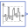
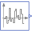
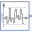

NoiseLibrary of noise blocks |
Package Contents
|
Defines global settings for the blocks of sublibrary Noise, especially a global seed value is defined |
|
|  |
Noise generator with uniform distribution |
|  |
Noise generator with normal distribution |
|  |
Noise generator with truncated normal distribution |
|
Noise generator to produce band-limited white noise with normal distribution |
Information
This information is part of the Modelica Standard Library maintained by the Modelica Association.
This sublibrary contains blocks that generate reproducible noise with pseudo random numbers. Reproducibility is important when designing control systems, either manually or with optimization methods (for example when changing a parameter or a component of a control system and re-simulating, it is important that the noise does not change, because otherwise it is hard to determine whether the changed control system or the differently computed noise has changed the behaviour of the controlled system). Many examples how to use the Noise blocks are provided in sublibrary Blocks.Examples.NoiseExamples.
Global Options
When using one of the blocks of this sublibrary, on the same or a higher level, block Noise.GlobalSeed must be dragged resulting in a declaration
inner Modelica.Blocks.Noise.GlobalSeed globalSeed;
This block is used to define global options that hold for all Noise block instances (such as a global seed for initializing the random number generators, and a flag to switch off noise). Furthermore, the impure random number generator impureRandom is initialized here.
Please note that only one globalSeed instance may be defined in the model due to the initialization of the impureRandom(..) random number generator! So, the block will usually reside on the top level of the model.
Parameters that need to be defined
When using a noise block of this package, at a minimum the following parameters must be defined:
Parameter Description samplePeriod Random values are drawn periodically at the sample rate in [s] defined with this parameter (time events are generated at the sample instants). Between sample instants, the output y is kept constant. distribution data Every noise block in this package needs additional data to describe the respective distribution. A random number distribution maps the drawn random numbers from the range 0.0 ... 1.0, to the desired range and distribution.
As a simple demonstration, see example Blocks.Examples.NoiseExamples.UniformNoise. In the next diagram, a simulation result is shown for samplePeriod=0.02 s and uniform distribution with y_min=-1, y_max=3:

Advanced tab: General settings
In the Advanced tab of the parameter menu, further options can be set in the noise blocks as shown in the next table:
Parameter Description enableNoise = true, if noise is generated at the output of the block (this is the default).
= false, if noise generation is switched off and the constant value y_off is provided as output.y_off If enableNoise = false, the output of the block instance has the value y_off. Default is y_off = 0.0. Furthermore, if enableNoise = true and time<startTime, the output of the block is also y_off (see description of parameter startTime below).
Advanced tab: Initialization
For every block instance, the internally used pseudo random number generator has its own state. This state must be properly initialized, depending on the desired situation. For this purpose the following parameters can be defined:
Parameter Description useGlobalSeed = true, if the seed (= Integer number) defined in the "inner GlobalSeed globalSeed" component is used for the initialization of the random number generator used in this instance of the noise block. Therefore, whenever the globalSeed defines a different number, the noise at every instance is changing. This is the default setting and therefore the globalSeed component defines whether every new simulation run shall provide the same noise (e.g. for a parameter optimization of controller parameters), or whether every new simulation run shall provide different noise (e.g. for a Monte Carlo simulation).
= false, if the seed defined by globalSeed is ignored. For example, if aerodynamic turbulence is modelled with a noise block and this turbulence model shall be used for all simulation runs of a Monte Carlo simulation, then useGlobalSeed has to be set to false.useAutomaticLocalSeed An Integer number, called local seed, is needed to initialize the random number generator for a specific block instance. Instances using the same local seed produce exactly the same random number values (so the same noise, if the other settings of the instances are the same).
If useAutomaticLocalSeed = true, the local seed is determined automatically from an impure random number generator that produces Integer random values (impureRandomInteger). This is the default. Note, this means that the noise might change if function randomInteger() is called more or less often in the overall model (e.g. because an additional noise block is introduced or removed). It is planned to change the automatic local seed function in a future version of package Modelica, once Modelica Language 3.3 language elements can be used (by using a hash value of the instance name of the model that is inquired with the Modelica Language 3.3 function getInstanceName()).
If useAutomaticLocalSeed = false, the local seed is defined explicitly by parameter fixedLocalSeed. It is then guaranteed that the generated noise remains always the same (provided the other parameter values are the same).fixedLocalSeed If useAutomaticLocalSeed = false, the local seed to be used. fixedLocalSeed can be any Integer number (including zero or a negative number). The initialization algorithm produces a meaningful initial state of the random number generator from fixedLocalSeed and (if useAutomaticGlobalSeed=true) from globalSeed even for bad seeds such as 0 or 1, so the subsequently drawing of random numbers produces always statistically meaningful numbers. startTime The time instant at which noise shall be generated at the output y. The default startTime = 0. For time<startTime, y = y_off. In some cases it is meaningful to simulate a certain duration until an approximate steady-state is reached. In such a case startTime should be set to a time instant after this duration.
Random Number Generators
The core of the noise generation is the computation of uniform random numbers in the range 0.0 .. 1.0 (and these random numbers are transformed afterwards, see below). This sublibrary uses the xorshift random number generation suite developed in 2014 by Sebastiano Vigna (for details see http://xorshift.di.unimi.it and Math.Random.Generators). These random number generators have excellent statistical properties, produce quickly statistically relevant random numbers, even if starting from a bad initial seed, and have a reasonable length of the internal state vector of 2, 4, and 33 Integer elements. The random number generator with an internal state vector of length 2 is used to initialize the other two random number generators. The length 4 random number generator is used in the noise blocks of this package, and every such block has its own internal state vector, as needed for reproducible noise blocks. The random number generator with a length of 33 Integer is used from the impure random number generator. It is suited even for massively parallel simulations where every simulation computes a large number of random values. More details of the random number generators are described in the documentation of package Math.Random.Generators.
Distributions
The uniform random numbers in the range 0.0 .. 1.0 are transformed to a desired random number distribution by selecting an appropriate distribution or truncated distribution. For an example of a truncated distribution, see the following diagram of the probability density function of a normal distribution compared with its truncated version:

The corresponding inverse cumulative distribution functions are shown in the next diagram:

When providing an x-value between 0.0 .. 1.0 from a random number generator, then the truncated inverse cumulative probability density function of a normal distribution transforms this value into the desired band (in the diagram above to the range: -1.5 .. 1.5). Contrary to a standard distribution, truncated distributions have the advantage that the resulting random values are guaranteed to be in the defined band (whereas a standard normal distribution might also result in any value; when modeling noise that is known to be in a particular range, say ± 0.1 Volt, then with the TruncatedNormal distribution it is guaranteed that random values are only generated in this band). More details of truncated distributions are given in the documentation of package Math.Distributions.